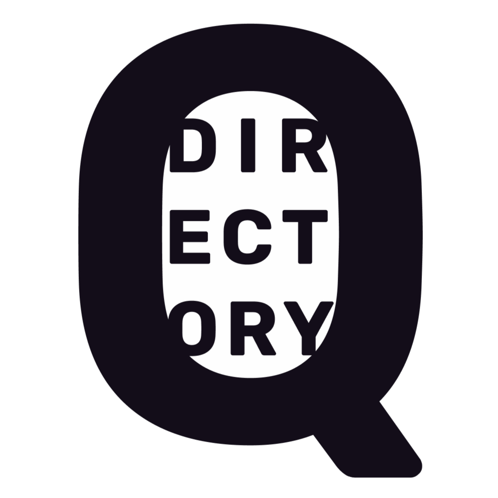

QUEER DIRECTORY WEBSITE
MY ROLE
UX & UI DESIGN + FRONTEND DEVELOPMENT
INITIAL IDEA & PROBLEM SOLVING
The initial idea for the website came after hearing multiple times, how wonderful it would be to have an online resource made for local (and global) queer community and, with it, create local engagement.
I have always wanted to create a map of sorts, especially for less queer friendly places, so people could see where LGBTQ+ places were and could engage with the local community in a safe way. Another problem we have as a community is a lack of quality media representation and with it, prolonged often anticlimactic internet searches in order to find good LGBTQIA2S+ movies, series, books, etc. There is plenty of online resources to find what you need, you're never sure if it's actually good and they are scattered all over the place and come from a variety of different sources, social media, news websites etc. I want to make this the product to be the definite resource for anything queer.
The Queer Directory idea then expanded into creating two parts of this website, an online one (WWW) – where we can document all queer media, that doesn’t necessarily have a brick and mortar location and a geographically based one (IRL), which would cover organizations, stores, groups based in specific locations and anything else queer with coordinates.
GOALS
At last Queer Directory was born. Firstly, I want to cover initial ideas and main focus points in the development of this website. Before any research was done, I have decided on a few key factors of the website.
- It must be fully open source and free, moderated, driven and supported by the community
- It should be made highly accessible with a number of safety measures and adjustments to create a helpful resource for anyone with an internet connection
- Key goal of the website is for people to engage more with their local communities in person and mainly use this resource as a way to find safe spaces and their own community
DESIGN SYSTEM & LOGO DESIGN
Main goals for the general design of the website are to create a clean, fun and functional website. I wanted it to be fairly simple and clean, I didn't want it to look cluttered.
The main color scheme is black, white and a variety of gray, with purple and yellow as the main accentuating colors. Purple was chosen also as a symbol for queerness and its historic connection to the community and yellow as nice, neutral addition to the purple. Purple is used for account and main website features, while yellow is used for searching around the website.
For the typeface, I used Archivo, as a sans-serif with enough variety to satisfy all the necessities of the project.
The grid system implemented is an eight grid for desktop and a four grid one for mobile and smaller screens. I have decided to work with the number 8 as a constraint and use multiples of it in all different contexts of the project. Everything from font size to spacing and grids.
I wanted the logo to be clean and clear and not quickly recognisable as queer, just as another safety measure. If someone sees it, they wouldn't instantly know this was an LGBTQIA+ web app. I started playing around with the initials and recognised Q can at times look like a magnifying glass, which suits the brand. Since the main point of it is looking through queer content. After exploring more, I got to positioning the word 'directory', inside the Q (magnifying glass). I looked for suitable typefaces and decided on Rubik. Some typefaces were too obviously a magnifying glass, I was looking for something more subtle.
WIREFRAMING and PROTOTYPING
Initial lo-fi sketches and wireframes really helped with seeing how to include all the different components into the application. Even though it has one main feature, creating and exploring queer led organizations, media etc.
The main part of the website are the filters and search bar, map, together with the cards that display the information. The reason I decided on the filter system as opposed to something different is because it seems inherintely adjustable, it will most likely showcase the most popular searches, which will be decided by the community. I plan on implementing certain filters at the beginning merely as a suggestion. Otherwise they will be decided by the community who contributes to the project.


USER PROFILE
The website as always is geared towards the queer community, primarily for the younger generation, under 30s, with the vision of this project becoming a helpful tool for them to find a local community and create friendships and connections in person.
The online part, creating the media catalogue of quality and not so quality (with disclaimers) queer media is geared towards anyone looking for it and younger people and older, who might not have the community around them and want to find representation in media. Naturally, it can be used by anyone and we will only see how it evolves with its usage. I have decided to do user interviews and user testing after doing first designs, so that is all yet to come.
SECURITY AND ACCESSIBILITY
All over the world, LGBTQIA2S+ people still aren’t accepted for who they are, somewhere it's even illegal. Therefore, I wanted to make this website have a few features, dedicated to people in those countries. All these features can be turned off for those who don’t need them.
For any accessibility adjustments I included a floating button made by Userway. There will also be a quick exit button implemented for anyone not safe needing to swiftly leave the website. Security wise and making it as accessible to as many people as possible, the website will be freely scrollable without registration, however if you want to add anything to it, there will be a registration process necessary for accountability. It will include an email or a phone number registration to create a profile, password will be optional. I'm still researching other options of authentication.
FUTURE DESIGN AND DEVELOPMENT
Queer Directory is currently in testing phase, over the next few weeks I’m planning on running tests with more and more users, fixing this initial design and making it as understandable and functional as it can get before starting development next year, with it hopefully launching sometime mid-2022.
The tests, however, are not the be all-end-all, the goal is to create an ever evolving application, that can easily adjust based on the users needs and how it's being used. People engaging with the application, the community, will in essence build it from first deployment onwards. It is created to only present a skeleton for what it will become, which also is the exciting part, seeing where it goes.
I’ll keep updating this post weekly, with new revelations, mobile design and design iterations as testing and development go on. Feel free to come back and see how it is going. 😊
Mockup psd created by designwarrior - www.freepik.com